MANTENIMIENTO Y REPARACIÓN
servicio con vehículo en marcha
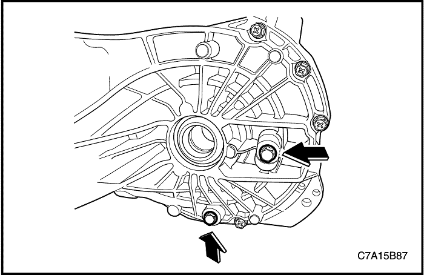


Procedimiento de comprobación del nivel de líquido de la caja de cambios
Importante: No es necesario comprobar el nivel de líquido a menos que se haya cambiado o que se sospeche de la presencia de una fuga. Compruebe el nivel de líquido sólo con el motor apagado. Asegúrese de que el vehículo está nivelado.
- Levante y sujete el vehículo.
- Quite el tapón de comprobación de nivel de aceite.
- Compruebe que el líquido está al nivel al abrir.
- Si la caja de cambios no tiene el nivel necesario, añada líquido SAE75W90 hasta que comience a rebosar por el tapón de llenado/comprobación.
- Coloque un nuevo tapón de comprobación del nivel de aceite.
Apretar
Apriete el tapón de comprobación del nivel de aceite hasta 6 N•m (53 lb-pulg) + 45°~180°.
- Baje el vehículo.
Sustitución del líquido de la caja de cambios
Precaución: El aceite de la caja de cambios está caliente. Debe tenerse precaución para evitar lesiones personales al vaciar el líquido de la caja de cambios de la misma.
- Levante y sujete el vehículo.
- Quite el tapón de drenaje de la caja de cambios y deje que se vacíe todo el líquido.
- Quite el tapón de comprobación de nivel de aceite.
- Coloque un nuevo tapón de drenaje de la caja de cambios.
Apretar
Apriete el tapón de drenaje de la caja de cambios hasta 6 N•m (53 lb-pulg.) + 45°~180°.
- Añada líquido de caja de cambios SAE75W90 hasta que rebose por el tapón de comprobación del nivel de líquido.
- Coloque un nuevo tapón de comprobación del nivel de aceite.
Apretar
Apriete el tapón de comprobación del nivel de aceite hasta 6 N•m (53 lb-pulg) + 45°~180°.
- Baje el vehículo y compruebe si funciona correctamente.
|
Especificaciones del aceite
|
SAE75W90
|
|
Capacidad de líquido
|
FWD
|
2,1 L (2,22 qt)
|
|
AWD
|
2,3 L (2,43 qt)
|
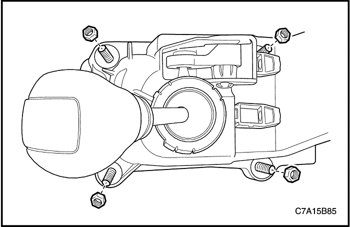
Alojamiento de la palanca de mando del cambio de marchas
Procedimiento de desmontaje
- Desconecte el cable negativo de la batería.
- Desmonte la consola. Consulte la Sección 9G, Guarnecido interior.
- Desconecte los cables de mando del alojamiento de la palanca de mando del cambio de marchas. Consulte el apartado "Cable de mando del cambio de marchas" de esta sección.
- Quite las tuercas del alojamiento de la palanca de control de cambios.
- Desmonte el alojamiento de la palanca de mando del cambio.
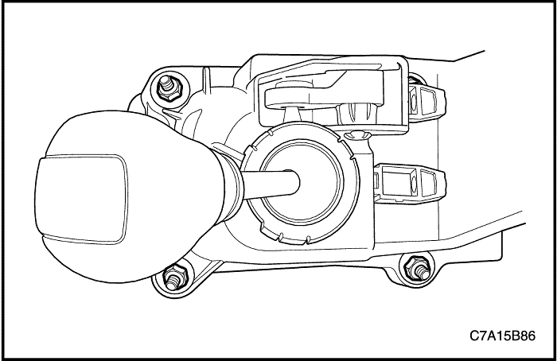
procedimiento de montaje
- Monte el alojamiento de la palanca de mando del cambio.
- Coloque las tuercas en el alojamiento de la palanca de mando del cambio.
Apretar
Apriete los tornillos del alojamiento de la palanca de mando del cambio de marchas hasta 8 N•m (71 lb-pulg.).
- Conecte los cables del cambio al alojamiento de la palanca de mando del cambio de marchas y ajuste el cable. Consulte el apartado "Cable de mando del cambio de marchas" de esta sección.
- Monte la consola. Consulte la Sección 9G, Guarnecido interior.
- Conecte el cable negativo de la batería.
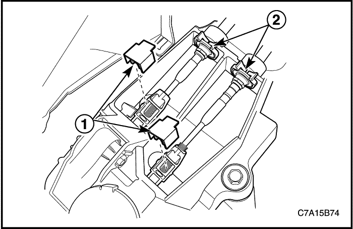
Cable de control de cambios
Procedimiento de desmontaje
- Desconecte el cable negativo de la batería.
- Desmonte la consola. Consulte la Sección 9G, Guarnecido interior.
- Retire los bloqueos de ajuste (1) del cable de control del cambio.
- Desmonte los cables de mando (2) del soporte del alojamiento de la palanca de mando del cambio de marchas.
- Desconecte el cable de mando de los ajustadores de mando del cambio de marchas.

- Retire los cables de mando (1) de la caja de cambios, utilizando una herramienta adecuada.
- Retire los cables (2) del soporte de cables de mando del cambio de marchas.
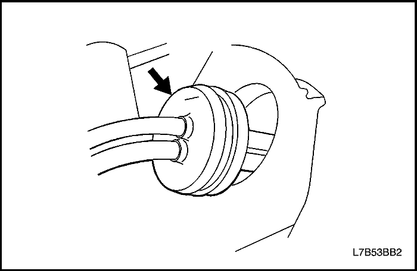
- Quite el pasacables del panel del salpicadero.
- Desconecte los cables de mando del cambio del vehículo.
procedimiento de montaje
- Monte los cables de mando del cambio de marchas en el vehículo.
- Coloque el pasacables en el panel del salpicadero.
Importante: Asegúrese de que el pasacables del cable de mando del cambio de marchas está bien asentado y que su flecha apunta hacia arriba.
- Coloque los cables (2) en el soporte de cables de mando del cambio de marchas.
- Monte los cables de mando del cambio de marchas (1) en la caja de cambios.
- Coloque la caja de cambios en punto muerto.
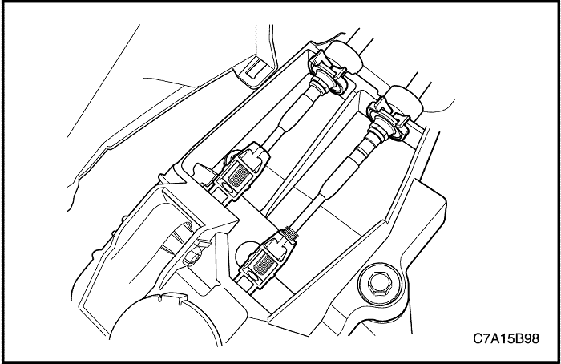
- Conecte los cables de mando en los ajustadores de control del cambio de marchas.
- Monte los cables de mando del cambio en el soporte del alojamiento de la palanca de control del cambio de marchas.

- Coloque la palanca de cambio en punto muerto.
- Con el cable del cambio acabado en los ajustadores, ajuste los cables presionando el pasador de bloqueo de punto muerto. Mueva el selector ligeramente para centrar el pasador de bloqueo de punto muerto.

- Presione y bloquee los bloqueos de ajuste del cable de mando del cambio de marchas.
- Tire del pasador de bloqueo de punto muerto hasta su posición original.
- Monte la consola. Consulte la Sección 9G, Guarnecido interior.
- Conecte el cable negativo de la batería.
Ajuste del cable de control de cambios
- Desconecte el cable negativo de la batería.
- Coloque la caja de cambios en punto muerto.
- Conecte los cables de mando en los ajustadores de control del cambio de marchas.
- Monte los cables de mando del cambio en el soporte del alojamiento de la palanca de control del cambio de marchas.
- Coloque la palanca de cambio en punto muerto.
- Ajuste el cable presionando el pasador de bloqueo de punto muerto. Mueva el selector ligeramente para centrar el pasador de bloqueo de punto muerto.
- Presione y bloquee los bloqueos de ajuste del cable de mando del cambio de marchas.
- Tire del pasador de bloqueo de punto muerto hasta su posición original.
- Conecte el cable negativo de la batería.
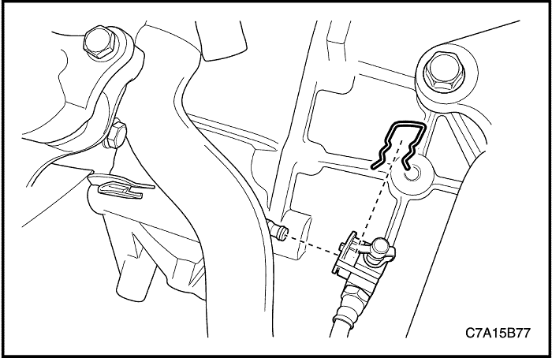
Conjunto de transeje
Herramientas necesarias
Fijación del soporte del conjunto motor DW110-060
Procedimiento de desmontaje
- Desmonte la batería y la bandeja portabatería. Consulte la sección 1E1, Sistema eléctrico del motor - 2.0 Diesel ;
sección 1E2, Sistema eléctrico del motor - FAM II 2.4D.
- Quite los tornillos de fijación del depósito del líquido de la dirección asistida y retire el depósito.
- Quite el pasador y desmonte el tubo del cilindro del actuador de embrague.
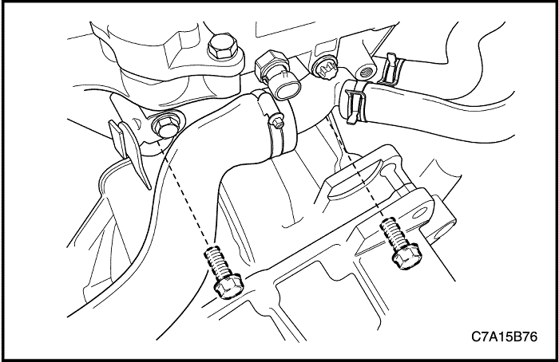
- Desmonte los tornillos superiores de sujeción de la caja de cambios al motor.
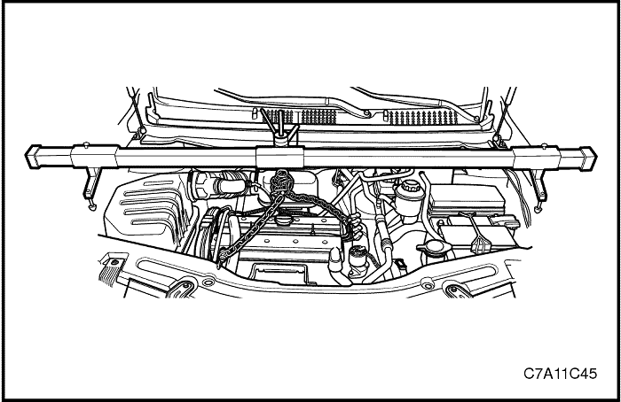
- Instale la DW110-060.
- Levante y apoye el vehículo adecuadamente.

- Desmonte la cubierta inferior del motor. Consulte la sección 9N, Bastidor y bajos de la carrocería.
- Desmonte el guardapolvo del lado izquierdo.

- Desmonte el tubo de escape delantero. Consulte la sección 1G1, Escape del motor - 2.0 Diesel ;
sección 1G2, Escape del motor - FAM II 2.4D.

- Desmonte la base del vehículo con cuidado. Consulte la Sección 2C, Suspensión delantera.
- Desmonte los palieres. Consulte la sección 3A, Árbol de transmisión delantero.
- Retire los cables de mando (1) de la caja de cambios, utilizando una herramienta adecuada.
- Retire los cables (2) del soporte de cables de mando del cambio de marchas.
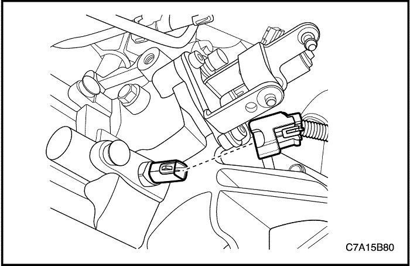
- Desenchufe el conector eléctrico del interruptor de la luz de marcha atrás.
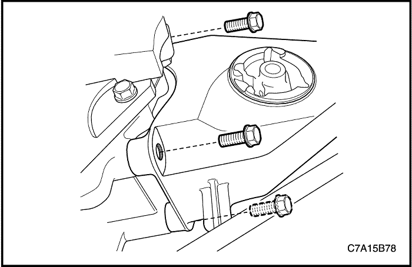
- Quite los tornillos de fijación del casquillo del amortiguador delantero y el casquillo.

- Quite los tornillos del soporte de fijación trasero de la caja de cambios.
- Desmonte el soporte de fijación trasero de la caja de cambios y el casquillo del amortiguador trasero.
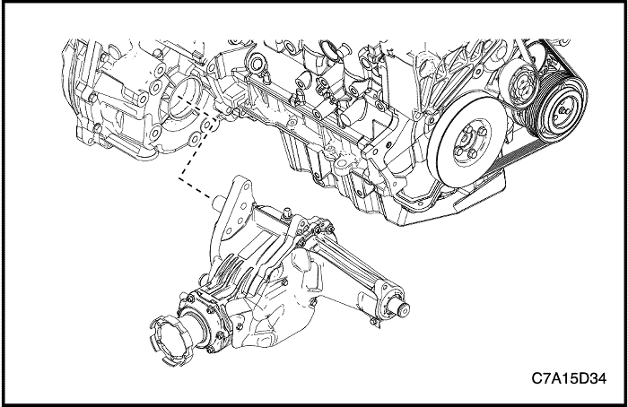
- Para AWD, desmonte la caja de transferencia de la caja de cambios. Consulte la sección 5D, Caja de transferencia.
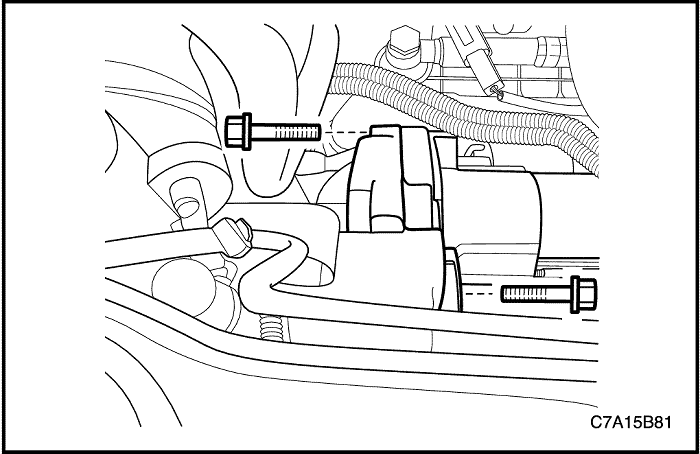
- Desmonte el motor de arranque. Consulte la sección 1E1, Sistema eléctrico del motor - 2.0 Diesel ;
sección 1E2, Sistema eléctrico del motor - FAM II 2.4D.

- Soporte el conjunto de la caja de cambios utilizando el gato de apoyo.
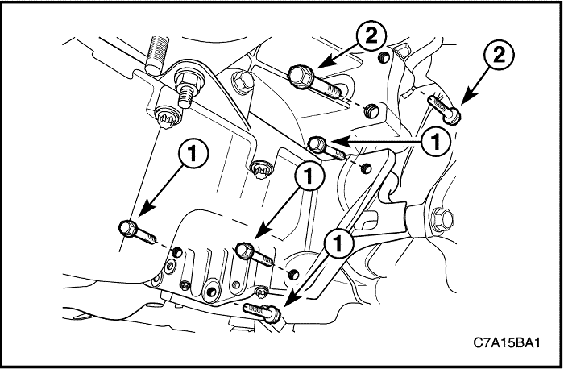
- Quite los tornillos de fijación que unen la brida del cárter del aceite a la caja de cambios (1).
- Quite los tornillos de la parte inferior derecha que unen el motor a la caja de cambios (2), junto al casquillo del amortiguador delantero.
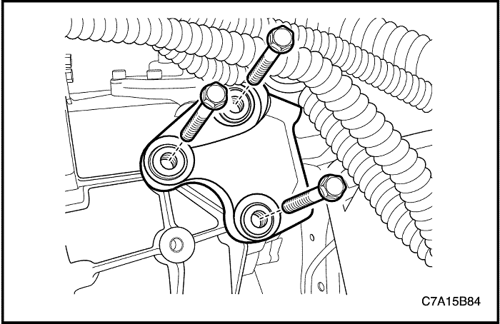
- Quite los tornillos del soporte de fijación superior izquierdo de la caja de cambios.
- Desmonte el conjunto de la caja de cambios con cuidado.
procedimiento de montaje
- Instale la caja de cambios en el vehículo y apoye el conjunto de la caja de cambios utilizando el gato de apoyo.
- Coloque los tornillos del soporte de fijación superior izquierdo de la caja de cambios.
Apretar
Apriete los tornillos del soporte de fijación superior izquierdo de la caja de cambios hasta 50 N•m (37 lb-pie).
- Coloque los tornillos de unión del motor inferior derecho a la caja de cambios (2), junto al casquillo del amortiguador delantero.
Apretar
Apriete los tornillos inferiores de fijación (2) del la parte inferior derecha del motor a la caja de cambios hasta 75 N•m (55 lb-pie).
- Coloque los tornillos que unen la brida del cárter del aceite a la caja de cambios (1).
Apretar
Apriete los tornillos de fijación de la brida del cárter del aceite a la caja de cambios (1) hasta 50 N•m (37 lb-pie).
- Retire el gato de sustentación de la caja de cambios.
- Monte el motor de arranque. Consulte la sección 1E1, Sistema eléctrico del motor - 2.0 Diesel ;
sección 1E2, Sistema eléctrico del motor - FAM II 2.4D.
- Para AWD, monte la caja de transferencia en la caja de cambios. Consulte la sección 5D, Caja de transferencia.
- Monte el soporte de fijación trasero de la caja de cambios y el casquillo del amortiguador trasero.
- Coloque los tornillos del soporte de fijación trasero de la caja de cambios.
Apretar
Apriete los tornillos del soporte de fijación trasero de la caja de cambios hasta 90 N•m (66 lb-pie).
- Coloque el casquillo del amortiguador delantero y los tornillos de fijación del mismo.
Apretar
Apriete los tornillos de fijación del casquillo del amortiguador delantero hasta 50 N•m (37 lb-pie)
- Monte los paliers. Consulte la sección 3A, Árbol de transmisión delantero.
- Enchufe el conector eléctrico del interruptor de la luz de marcha atrás.
- Coloque los cables (2) en el soporte de cables de mando del cambio de marchas.
- Monte los cables de mando del cambio de marchas (1) en la caja de cambios.
- Instale con cuidado la base en el vehículo. Consulte la Sección 2C, Suspensión delantera.
- Monte el tubo de escape delantero. Consulte la sección 1G1, Escape del motor - 2.0 Diesel ;
sección 1G2, Escape del motor - FAM II 2.4D.
- Monte la tapa inferior del lado izquierdo.
- Monte la cubierta inferior del motor. Consulte la sección 9N, Bastidor y bajos de la carrocería.
- Baje el vehículo.
- Desmonte la DW110-060 del motor.
- Monte los tornillos superiores de fijación de la caja de cambios al motor.
Apretar
Para FAM II 2.4D o 2.0S Diesel, apriete los tornillos superiores de la caja de cambios al motor hasta 75 N•m (55 lb-pie).
- Coloque el pasador y monte el tubo del cilindro del actuador de embrague.
- Instale la fijación del depósito de aceite de la dirección asistida.
- Monte la batería y la bandeja portabatería. Consulte la sección 1E1, Sistema eléctrico del motor - 2.0 Diesel ;
sección 1E2, Sistema eléctrico del motor - FAM II 2.4D.
- Realice una purga de aire. Consulte la sección 5C, Embrague.
- Ajuste el cable de mando del cambio de marchas Consulte el apartado "Ajuste del cable de mando del cambio de marchas" de esta sección.
- Compruebe el nivel de aceite. Consulte el apartado "Procedimiento de comprobación del aceite de la caja de cambios" de esta sección.
 |
|
 |
|
| © Copyright Chevrolet Europe. Reservados todos los derechos |